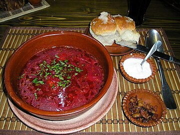
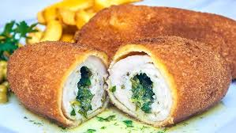
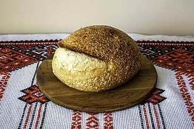
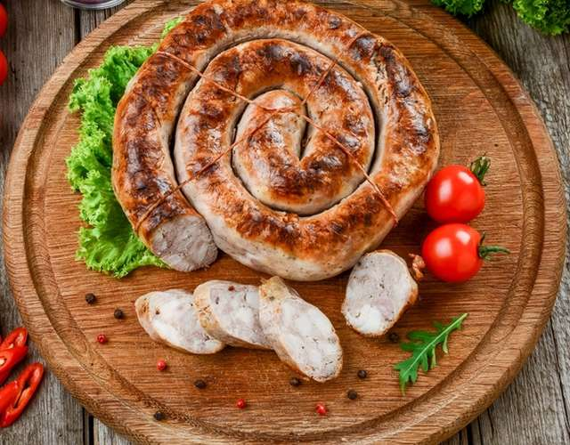
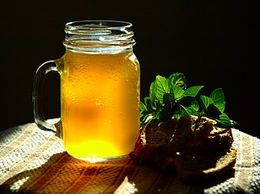

Історія
Українська кухня створювалась протягом багатьох віків, тому вона певною мірою відбиває не тільки історичний розвиток українського народу, його звичаї і смаки, а й соціальні умови, природні та кліматичні особливості, в яких перебував український народ в ході свого історичного розвитку.
Уже в часи трипільської культури (5-6 тисяч років тому), яку сприйняли східні слов'яни, населення Правобережної України вирощувало зернові культури — пшеницю, ячмінь і просо.
На теренах стародавньої та середньовічної Європи існували два способи харчування, які визначили подальшу історію повсякденного життя європейців: для греків і римлян був притаманний рослинний спосіб харчування (пшениця, оливки, виноград), а так звані варвари віддавали перевагу м'ясній моделі (дичина, м'ясо свиней з лісових випасів, воловина, риба), тобто існувало протиставлення двох типів господарств: обробки земель під землеробство і привласнення «дарів» дикої, неосвоєної, первісної природи. Як хліборобство для римлян є ознакою вищої культури виробництва продуктів харчування, так м'ясо для північної Європи визначається в культурі як головна цінність. Протистояння й пізніший взаємовплив цих двох способів харчування, створили передумови для розвитку європейської народної кулінарії.
Перші страви
Борщ
Серед перших страв головне місце посідає борщ. Серед місцевих різновидів є борщ галицький з вушками, полтавський з галушками, пирятинський пісний із квасолею та рибою, поліський із грибами, наддніпрянський із пшоном, волинський з вишнями або чорносливом та багато інших. До того ж, кожна господиня, господар готують борщ за своїм особливим рецептом. Це традиційна українська страва, яку їли бодай не щодня та подавали і на вечорницях, і на весіллі. Добре приготований у печі борщ не приїдався, а другого дня був навіть смачнішим, ніж першого.
На Поліссі борщ здавна вважався символом родини, адже усі складники, вмліваючи у глиняному горщику, передають свої смаки одне одному, і утворюють неповторну смакову гаму. Перше ніж подати на стіл — господиня «затирала» борщ, тобто товкла у ковганці топлений здір (смалець) з сіллю та часником. У гарній хаті борщ подавали гарячим, та таким, щоби з нього ще пара йшла. Українці вірили, що то не просто пара, а духи предків, які відійшли у світ інший, а нині завітали, щоби допомагати їм. Подати гостю борщ без пари, або й зовсім холодним — вважалося за неповагу. У давні часи м'ясо у борщі можна було зустріти лише на великі свята, бо свиней часто не кололи. Коли не було посту — клали ще й добрячу ложку сметани.
Не менш поширені в Україні також гороховий суп, капусняк, розсольник, зелений борщ. Багато страв, які раніше вважали звичними і широко використовували, згодом почали забувати — це, наприклад, кулеші, лемішки, шпундра, верещака тощо.
Це просто список для стилізації [class*="te"]
- українська
- смачна
- їжа
М'ясо
Котлета по-київськи
Котле́та по-ки́ївськи — різновид котлети у вигляді відбитого курячого філе, в яке загорнуто шматочок холодного вершкового масла. Готова котлета має овальну форму. Обсмажують її у фритюрі, попередньо вмочивши в збите яйце і панірувальні сухарі. Серед її визначальних рис — приготування з цілої курячої грудки чи шматка телятини, соковите м'ясо, тонке хрустке панірування, рідке запашне масло всередині, яке має витікати під час її розрізання.
Борошняні страви
Український хліб
Традиційний житній хліб називають об'єктом нематеріальної спадщини України.
Житнє та пшеничне борошно, рідше — ячмінне та кукурудзяне, були основними складовими для приготування українського хліба. У часи неврожаїв зерна, в тісто для хліба нерідко підмішували моркву, буряк, згодом — картоплю, а також жолуді, кору дуба або берези, кропиву та лободу.
Цікаво, що відомі в сучасності дріжджі, ніколи не входили до складу повсякденного українського хліба, а використовувалися хіба що для здоби. В давнину українці послуговувалися заквасками: солодова, хмільна, ягідна, вівсяна, з родзинок тощо.
Ковбаси
Домашня ковбаса
Є дуже поширеним видом ковбас, які виготовляють в домашніх умовах із свинини. Готується із заздалегідь почищених та помитих свинячих кишок, які заповнюють фаршем із нарізаного шматочками м'яса з салом у різних співвідношеннях. Приправами для домашньої ковбаси, залежно від рецепта, є мелений чорний перець, часник, гірчиця, кмин, ялівець. Після начиняння кінці кишок зв'язують, а потім підварюють та запікають у печі на пательні.
Ковбаси, зазвичай, робили перед Різдвом, Великоднем, і вони були обов'язковою й почесною стравою на святковому столі. В узвичаєній українській кухні це страва, яку робили переважно про запас. Для тривалого зберігання ковбасу складали у горщики, заливали смальцем і ставили у прохолодне місце.
Напої
З напоїв для української кухні притаманні молочні, особливе поширення має пряжене молоко, кисляк та ряжанка. Одним з улюблених напоїв є також узвар — відвар фруктів. Також з давніх-давен в Україні цінують кваси: хлібний — з сухарів, фруктовий — із дичок — сирівець, а також борошняний, як-от ціберей.
Квас
Серед безалкогольних напоїв першість мав квас — повсякденний і святковий напій, відомий слов'янам ще з язичницьких часів, який вживали і у піст, і у м'ясоїд. Квас, на відміну від меду і навіть пива, був напоєм демократичним, доступним у повсякденні й простолюдинові. Літописець, вихваляючи щедрість і жебраколюбство князя Володимира Святославича, серед страв, призначених для бідних, називає квас. В ранніх джерелах згадується і солод як необхідна складова квасу. Найпоширенішим був сирівець — хлібний квас, потім — ячмінно-солодовий, також готували яблучний, щавлевий, буряковий, березовий, кленовий квас. Способи приготування були прості: або шляхом природного зброджування (сквашування) житніх сухарів чи солодового борошна, залитих окропом, або ж шумування досягали за допомогою хмільних шишок.